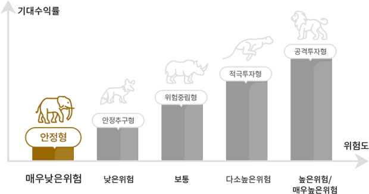

고객님은 안정형 입니다.
MMF 등에 주된 투자를 통해 원금의 손실이 발생하지 않는 범위에서 적금수준의 수익만을 기대하는 투자자유형

안정형: 43점 미만
안정추구형:44점~54점
위험중립형 :55점~67점
적극투자형:68점~80점
공격투자형:81점 이상
안정형: 43점 미만/ 안정추구형:44점~54점 /위험중립형 :55점~67점 / 적극투자형:68점~80점/ 공격투자형:81점 이상
위 투자성향 결과는 고객님이 입력한 투자자정보를 근거로 산출된 결과입니다. 고객님에게 적합한 펀드상품의 위험등급을 확인하시고, 그 책임하에 투자결정을 신중히 하시기 바랍니다.